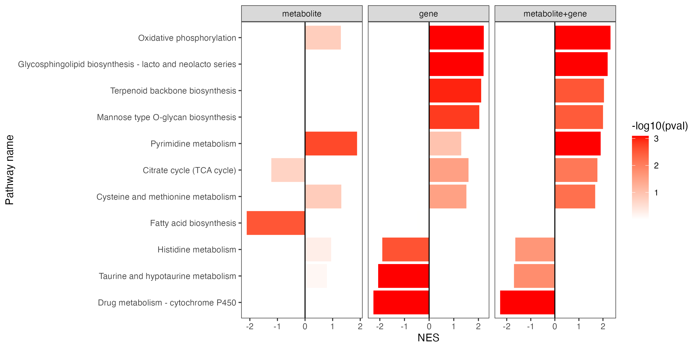

Chapter 6 Figure1
6.1 1.1 (A)
6.1.1 Batch removal
dir.create("result/figure1")
library(dplyr)
library(ggplot2)
library(MNet)
# SERRF校正前
before_normalization_raw <- data.table::fread("raw_data/test_for_serrf.txt") %>%
as.data.frame()
before_normalization <- before_normalization_raw %>%
t() %>%
as.data.frame() %>%
filter(!V4 %in% c("No","label"))
names(before_normalization) <- as.character(before_normalization_raw[,2])
names(before_normalization)[4] <- "sample_id"
# pca
before_batch <- as.character(before_normalization_raw[1,-c(1,2)])
before_type <- as.character(before_normalization_raw[2,-c(1,2)])
before_sample_id <- as.character(before_normalization_raw[4,-c(1,2)])
dd <- data.frame(type=before_type,batch=before_batch,sample_id=before_sample_id)
mydata_pca <- apply(before_normalization[,5:ncol(before_normalization)],2,as.numeric)
pca <- prcomp(log2(mydata_pca+1), center = T, scale. = T)
variance = pca$sdev^2/sum(pca$sdev^2)
pca.data = data.frame(pca$x,type=before_type,batch=before_batch,sample_id=before_sample_id)
p1 <- ggplot(pca.data,aes(PC1,PC2,color=type,shape=before_batch))+
geom_point()+
scale_color_manual(values=c("red","#3e68a0"))+
scale_shape_manual(values=seq(0,length(unique(before_batch))-1))+
#geom_text(aes(label=sample_id))+
theme_bw()+
theme(panel.grid.major = element_blank(),panel.grid.minor = element_blank())+
labs(x=paste0("PC1 (",signif(variance[1]*100,3),"%)"),
y=paste0("PC2 (",signif(variance[2]*100,3),"%)"))
# SERRF校正后
after_normalization_raw <- read.csv("raw_data/normalized by - SERRF.csv") %>%
as.data.frame() %>%
dplyr::distinct(label,.keep_all = T) %>%
tibble::column_to_rownames("label") %>%
t() %>%
as.data.frame() %>%
tibble::rownames_to_column(var="sample") %>%
dplyr::mutate(sample=gsub("X","",sample)) %>%
tibble::column_to_rownames("sample")
after_sample_id <- rownames(after_normalization_raw)
after_dd <- data.frame(sample_id=after_sample_id) %>%
dplyr::left_join(dd,by="sample_id")
mydata_pca <- apply(after_normalization_raw,2,as.numeric)
pca <- prcomp(log2(mydata_pca+1), center = T, scale. = T)
variance = pca$sdev^2/sum(pca$sdev^2)
pca.data = cbind(pca$x,after_dd)
p2 <- ggplot(pca.data,aes(PC1,PC2,color=type,shape=batch))+
geom_point()+
scale_color_manual(values=c("red","#3e68a0"))+
scale_shape_manual(values=seq(0,1))+
#geom_text(aes(label=sample_id))+
theme_bw()+
theme(panel.grid.major = element_blank(),panel.grid.minor = element_blank())+
labs(x=paste0("PC1 (",signif(variance[1]*100,3),"%)"),
y=paste0("PC2 (",signif(variance[2]*100,3),"%)"))
ggsave("result/figure1/01.pca_raw.pdf",p1,width=5,height = 3.9)
ggsave("result/figure1/01.pca_normalization.pdf",p2,width=5,height = 3.9)
ggsave("result/figure1/01.pca_raw.png",p1,width=5,height = 3.9)
ggsave("result/figure1/01.pca_normalization.png",p2,width=5,height = 3.9)
6.1.3 Metabolic pathway information
refmet_kegg <- name2keggid(refmetid_result$Refmet_name)
result_pathway <- keggid2pathway(refmet_kegg$KEGG_id)
result <- refmetid_result %>%
dplyr::left_join(refmet_kegg,by=c("Refmet_name"="Name")) %>%
dplyr::left_join(result_pathway,by=c("KEGG_id"="ENTRY")) %>%
dplyr::select(Input_name,Refmet_name,KEGG_id,PATHWAY,everything())
write.table(result,"result/figure1/03.result_all.txt",sep = "\t",quote = F,row.names = F)6.1.4 Metabolite and metabolic pathway annotation
meta_name <- data.frame(name=substr(rownames(meta_dat),start=1,stop=6)) %>%
dplyr::left_join(all_kegg_id,by=c("name"="ENTRY")) %>%
dplyr::distinct(name,.keep_all = T)
meta_subtype <- name2refmet(meta_name$NAME)
write.table(meta_name,"result/figure1/04.annotation_subclass.txt",quote=F,row.names=F)
dd <- meta_subtype %>%
dplyr::group_by(Super_class) %>%
dplyr::summarise(n=n()) %>%
dplyr::filter(!is.na(Super_class)) %>%
dplyr::arrange(desc(n))
dd$Super_class <- factor(dd$Super_class,levels = dd$Super_class)
p <- ggplot(dd,aes(Super_class,n,fill=Super_class))+
geom_bar(stat="identity")+
theme_bw()+
scale_y_continuous(expand = c(0.01, 0.01))+
theme(axis.text.x = element_text(angle = 45, hjust = 1))
ggsave("result/figure1/04.annotation.pdf",width=8,height = 6)
ggsave("result/figure1/04.annotation.png",width=8,height = 6)
d <- PathwayExtendData %>%
dplyr::select(kegg_pathwayname,kegg_category) %>%
unique() %>%
dplyr::group_by(kegg_category) %>%
dplyr::summarise(n=n()) %>%
dplyr::arrange(n)
d$kegg_category <- factor(d$kegg_category,levels=d$kegg_category)
cols <- c(RColorBrewer::brewer.pal(9,'YlOrRd')[1:2],RColorBrewer::brewer.pal(9,'Reds'))
p1 <- ggplot(d,aes(kegg_category,n,fill=kegg_category))+
geom_bar(stat="identity")+
theme_bw()+
scale_y_continuous(expand = c(0.01, 0.01))+
#theme(axis.text.x = element_text(angle = 45, hjust = 1))+
scale_fill_manual(values=cols)+
coord_flip()
p1
ggsave("result/figure1/04.annotation_pathways.pdf",p1,width=10,height = 6)
ggsave("result/figure1/04.annotation_pathways.png",p1,width=10,height = 6)
6.2 1.2 (B)
6.2.2 Time series analysis
names(clinical_index)[3] <- "1-methyladenosine"
clinical_index <- clinical_index %>%
dplyr::mutate(group=ifelse(group=="A","tumor","normal"))
time_series_ALT <- pCliTS(clinical_index,"1-methyladenosine")
ggsave("result/figure1/05.clinical_time_series.pdf",time_series_ALT,width=7,height = 5)
ggsave("result/figure1/05.clinical_time_series.png",time_series_ALT,width=7,height = 5)

6.3 1.3 (C)
6.3.1 Dimension reduction & Visualization
#------------------------------------------------------------------------------
# limma analysis
#------------------------------------------------------------------------------
group <- c(rep("tumor",24),rep("normal",7))
result_mlimma_all <- mlimma(meta_dat,group)
write.table(result_mlimma_all,"result/figure1/result_mlimma_all.txt",quote=F,row.names=F,sep="\t")
#------------------------------------------------------------------------------
# PCA
#------------------------------------------------------------------------------
p_out <- pPCA(meta_dat,group)
ggsave("result/figure1/06.PCA_p2.pdf",p_out$p2,width=8,height = 6)
ggsave("result/figure1/06.PCA_p2.png",p_out$p2,width=5,height = 3.9)
#------------------------------------------------------------------------------
# OPLS-PCA
#------------------------------------------------------------------------------
pdf("result/figure1/06.OPLS-DA.pdf")
result_DM_all <- DM(2**meta_dat,group)
dev.off()
oplsda <- ropls::opls(t(myscale(meta_dat,method="raw_zscore")), group, predI = 1, orthoI = 1)
sample.score <- data.frame(oplsda@scoreMN,group=group,o1=oplsda@orthoScoreMN[,1],
label=rownames(oplsda@scoreMN))
p <- ggplot(sample.score,aes(p1,o1,color=group))+
geom_hline(yintercept=0,linetype="dashed",size=0.5)+
geom_vline(xintercept=0,linetype="dashed",size=0.5)+
geom_point(size=1.9)+
ggplot2::geom_text(ggplot2::aes(label=label),size=1)+
stat_ellipse()+
scale_color_manual(values =c("#00599F","#D01910"))+
theme_bw()+
labs(x="p1 (20%)")
#p
ggsave("result/figure1/06.p.opls-da.pdf",p,width=5,height = 4.5)
ggsave("result/figure1/06.p.opls-da.png",p,width=5,height = 4.5)
6.3.2 Differential metabolites visualization
6.3.2.2 Heatmap
result_mlimma_all <- data.table::fread("result/figure1/result_mlimma_all.txt") %>%
as.data.frame()
result_mlimma_filter <- result_mlimma_all %>%
dplyr::filter(abs(logFC) > 1) %>%
dplyr::filter(`adj.P.Val` < 0.05)
dat_filter <- meta_dat %>%
tibble::rownames_to_column(var="label") %>%
dplyr::filter(label %in% result_mlimma_filter$name) %>%
tibble::column_to_rownames("label") %>%
head(n=10)
pdf("result/figure1/08.p_heatmap.pdf",width=5,height = 5)
p_heatmap <- MNet::pHeatmap(dat_filter,group,clustering_distance_cols ="manhattan",
clustering_method="ward.D",fontsize_row=3)
dev.off()
png("result/figure1/08.p_heatmap.png", width = 9, height = 8, units = 'in', res = 200 )
p_heatmap <- MNet::pHeatmap(dat_filter,group,clustering_distance_cols ="manhattan",
clustering_method="ward.D",fontsize_row=3)
dev.off()
6.3.3 Pathway enrichment analyses
6.3.3.1 PEA
result_mlimma_all <- data.table::fread("result/figure1/result_mlimma_all.txt") %>%
as.data.frame()
dat_increase <- result_mlimma_all %>%
dplyr::filter(logFC > 0.58) %>%
dplyr::filter(P.Value < 0.05)
dat_decrease <- result_mlimma_all %>%
dplyr::filter(logFC < -0.58) %>%
dplyr::filter(P.Value < 0.05)
kegg_all <- unique(c(dat_increase$name,dat_decrease$name))
pathway_result <- PathwayAnalysis(kegg_all,out="metabolite")
result <- pathway_result
kegg_pathway_uniq <- PathwayExtendData %>%
dplyr::select(kegg_pathwayname,kegg_category) %>%
dplyr::rename("PATHWAY"="kegg_pathwayname") %>%
dplyr::rename("pathway_type"="kegg_category") %>%
unique()
p_cutoff <- 0.0005
result_1 <- result$output %>%
dplyr::filter(pvalue < p_cutoff) %>%
dplyr::left_join(kegg_pathway_uniq,by=c("name"="PATHWAY")) %>%
dplyr::arrange(pvalue)
pathway_hh <- unique(result_1$pathway_type)
result_1 <- result_1 %>%
dplyr::arrange(match(pathway_type,pathway_hh))
result_1$name <- factor(result_1$name,levels = rev(result_1$name))
result_1$pathway_type <- factor(result_1$pathway_type,levels=unique(kegg_pathway_uniq$pathway_type))
p1 <- ggplot(result_1,aes(name,-log10(pvalue)))+
geom_bar(stat="identity",aes(fill=pathway_type))+
scale_fill_manual(values=RColorBrewer::brewer.pal(11, "Set3"),name="Pathway Category",
breaks=unique(kegg_pathway_uniq$pathway_type))+
coord_flip()+
theme_bw()+
labs(x=NULL)
p1
ggsave("result/figure1/10.pathway_enrichment.pdf",p1,width = 8,height = 5)
ggsave("result/figure1/10.pathway_enrichment.png",p1,width = 8,height = 5)6.3.3.2 DA score
result_da <- DAscore(dat_increase$name,dat_decrease$name,result_mlimma_all$name,sort_plot = "category",out="metabolite" )
result <- result_da$result
min_measured_num <- 5
result_filter <- result %>%
dplyr::filter(Measured_members_num>=min_measured_num) %>%
dplyr::filter(Pathway %in% c("Histidine metabolism","Tyrosine metabolism",
"Citrate cycle (TCA cycle)","Pyruvate metabolism",
"Oxidative phosphorylation","Sulfur metabolism",
"Glycerophospholipid metabolism","Glycerolipid metabolism",
"Biosynthesis of unsaturated fatty acids","Fatty acid biosynthesis",
"Pyrimidine metabolism","Purine metabolism"))
result_filter <- result_filter %>%
dplyr::arrange(DA_score) %>%
dplyr::arrange(`Pathway Category`)
result_filter$Pathway <- factor(result_filter$Pathway,levels=result_filter$Pathway)
pathway_data <- PathwayExtendData %>%
dplyr::filter(type=="metabolite")
p <- ggplot2::ggplot(result_filter)+
ggplot2::geom_point(ggplot2::aes(x=Pathway,y=DA_score,size=log2(Measured_members_num),color=`Pathway Category`))+
ggplot2::geom_pointrange(ggplot2::aes(x=Pathway,y=DA_score,ymin=0,ymax=DA_score,color=`Pathway Category`))+
scale_color_manual(values=RColorBrewer::brewer.pal(11, "Set3"),name="Pathway Category",
breaks=unique(pathway_data$kegg_category))+
ggplot2::coord_flip()+
# ggplot2::ylab("DA score")+
ggplot2::xlab(NULL)+
ggplot2::theme_bw()
ggsave("result/figure1/11.DA_score.pdf",p,width=7,height = 4)
ggsave("result/figure1/11.DA_score.png",p,width=7,height = 4)6.3.3.3 MSEA
dd_arrange <- data.table::fread("result/figure1/result_mlimma_all.txt") %>%
as.data.frame() %>%
dplyr::arrange(logFC)
d_logFC <- dd_arrange$logFC
names(d_logFC) <- dd_arrange$name
result_msea <- MSEA(d_logFC)
result_msea <- result_msea %>%
dplyr::mutate(leadingEdge=as.character(leadingEdge))
write.table(result_msea,"result/figure1/12.MSEA.txt",quote=F,row.names=F,sep="\t")
p_MSEA <- pMSEA("Pyrimidine metabolism",d_logFC)
ggsave("result/figure1/12.p_MSEA_pyrimidine.pdf",p_MSEA,width=5,height = 4)
ggsave("result/figure1/12.p_MSEA_pyrimidine.png",p_MSEA,width=5,height = 4)6.4 1.4 (D)
6.4.1 Extended pathway enrichment analysis (EPEA)
library(MNet)
group[which(group=="normal")] <- "a"
group[which(group=="tumor")] <- "normal"
group[which(group=="a")] <- "tumor"
all_meta <- mlimma(meta_dat,group)
all_gene <- mlimma(gene_dat,group)
diff_gene <- all_gene %>%
dplyr::filter(abs(logFC) > 1) %>%
dplyr::filter(adj.P.Val < 0.05)
diff_meta <- all_meta %>%
dplyr::filter(abs(logFC) > 0.58) %>%
dplyr::filter(adj.P.Val < 0.05)
diff_all <- rbind(diff_gene,diff_meta)
result_gene <- PathwayAnalysis(diff_gene$name,out="gene",p_cutoff=1.5)
result_meta <- PathwayAnalysis(diff_meta$name,out="metabolite",p_cutoff=1.5)
result_all <- PathwayAnalysis(diff_all$name,out="Extended",p_cutoff=1.5)
pathway_all <- rbind(result_gene$output,result_meta$output,result_all$output) %>%
dplyr::filter(adjp < 0.001) %>%
dplyr::pull(name) %>%
unique()
result_gene_filter <- result_gene$output %>%
as.data.frame() %>%
dplyr::select(name,nOverlap,adjp) %>%
dplyr::filter(name %in% pathway_all) %>%
dplyr::mutate(type="gene")
result_meta_filter <- result_meta$output %>%
as.data.frame() %>%
dplyr::select(name,nOverlap,adjp) %>%
dplyr::filter(name %in% pathway_all) %>%
dplyr::mutate(type="metabolite")
result_all_filter <- result_all$output %>%
as.data.frame() %>%
dplyr::select(name,nOverlap,adjp) %>%
dplyr::filter(name %in% pathway_all) %>%
dplyr::mutate(type="all")
all <- rbind(result_gene_filter,result_meta_filter,result_all_filter) %>%
dplyr::mutate(adjp=ifelse(adjp < 1.3e-04 ,1.3e-04,adjp)) %>%
dplyr::mutate(type=factor(type,levels=c("metabolite","gene","all")))
p <- ggplot(all,aes(type,name))+
geom_point(aes(size=nOverlap,color=-log10(adjp)))+
theme_bw()+
theme(panel.border = element_blank(),panel.grid.major = element_blank(),
panel.grid.minor = element_blank(),axis.line = element_line(colour = "black"))+
scale_color_gradient(low="white",high="red")+
labs(x=NULL,y="Pathway name")
ggsave("result/figure1/13.EPEA.pdf",p,width=6,height = 4)
ggsave("result/figure1/13.EPEA.png",p,width=6,height = 4)6.4.2 Extended differential abundance (EDA) score
meta <- data.table::fread("result/unique/06.DA_meta.txt") %>%
as.data.frame() %>%
dplyr::filter(Measured_members_num >= 3) %>%
dplyr::mutate(Type="metabolite")
gene <- data.table::fread("result/unique/05.DA_gene.txt") %>%
as.data.frame() %>%
dplyr::filter(Measured_members_num >= 10) %>%
dplyr::mutate(Type="gene")
all <- data.table::fread("result/unique/07.DA_all.txt") %>%
as.data.frame() %>%
dplyr::filter(Measured_members_num >= 13) %>%
dplyr::mutate(Type="metabolite+gene")
result <- rbind(meta,gene,all) %>%
dplyr::filter(!Pathway %in% c("Sulfur metabolism","Fructose and mannose metabolism","Ascorbate and aldarate metabolism",
"Galactose metabolism","Butanoate metabolism","Pentose and glucuronate interconversions","Starch and sucrose metabolism",
"Amino sugar and nucleotide sugar metabolism","Propanoate metabolism","Inositol phosphate metabolism",
"Tryptophan metabolism",
"Selenocompound metabolism")) %>%
dplyr::filter(!`Pathway Category` %in% c("Metabolism of terpenoids and polyketides","Metabolism of cofactors and vitamins",
"Biosynthesis of other secondary metabolites","Xenobiotics biodegradation and metabolism",
"Glycan biosynthesis and metabolism","Metabolism of other amino acids"))
result_filter <- result %>%
dplyr::filter(Pathway %in% c("Sphingolipid metabolism","Glycerophospholipid metabolism",
"Fatty acid biosynthesis","Glycerolipid metabolism",
"Biosynthesis of unsaturated fatty acids","Fatty acid elongation",
"Steroid biosynthesis","Purine metabolism",
"Pyrimidine metabolism","Histidine metabolism","Tyrosine metabolism")) %>%
dplyr::mutate(DA_score=ifelse(Pathway=="Histidine metabolism" & Type=="metabolite",-0.2,
ifelse(Pathway=="Sphingolipid metabolism" & Type=="metabolite",-0.2,DA_score))) %>%
dplyr::arrange(DA_score) %>%
dplyr::arrange(`Pathway Category`)
result_filter$Pathway <- factor(result_filter$Pathway,levels=unique(result_filter$Pathway))
kegg_pathway_uniq <- PathwayExtendData %>%
dplyr::select(kegg_pathwayname,kegg_category) %>%
dplyr::rename("PATHWAY"="kegg_pathwayname") %>%
dplyr::rename("pathway_type"="kegg_category") %>%
unique()
result_filter$Type <- factor(result_filter$Type,levels=c("metabolite","gene","metabolite+gene"))
p <- ggplot2::ggplot(result_filter)+
ggplot2::geom_point(ggplot2::aes(x=Pathway,y=DA_score,size=log2(Measured_members_num),color=`Pathway Category`))+
ggplot2::geom_pointrange(ggplot2::aes(x=Pathway,y=DA_score,ymin=0,ymax=DA_score,color=`Pathway Category`))+
scale_color_manual(values=RColorBrewer::brewer.pal(11, "Set3"),name="Pathway Category",
breaks=unique(kegg_pathway_uniq$pathway_type))+
theme_bw()+
theme(panel.grid.major = element_blank(), panel.grid.minor = element_blank(),
axis.line = element_line(colour = "black"))+
geom_hline(yintercept=c(0))+
ggplot2::coord_flip()+
ggplot2::xlab(NULL)+
facet_grid(. ~ Type,scales="free_x")
p
ggsave("result/figure1/14.DA.pdf",p,width=10,height = 4)
ggsave("result/figure1/14.DA.png",p,width=10,height = 4)6.4.3 Extended data set enrichment analysis (ESEA)
library(MNet)
all_meta <- mlimma(meta_dat,group)
all_gene <- mlimma(gene_dat,group)
all_result <- rbind(all_meta,all_gene)
all <- all_result$logFC
names(all) <- all_result$name
gene <- all_gene$logFC
names(gene) <- all_gene$name
meta <- all_meta$logFC
names(meta) <- all_meta$name
result_meta <- ESEA(meta,out="metabolite",minSize = 3)
result_gene <- ESEA(gene,out = "gene",minSize = 10)
result_all <- ESEA(all,out="Extended",minSize = 13)
pathway_msea <- rbind(result_meta,result_gene,result_all) %>%
dplyr::filter(pval < 0.01) %>%
dplyr::pull(pathway) %>%
unique()
length(pathway_msea)
msea_meta_filter <- result_meta %>%
dplyr::filter(pathway %in% pathway_msea) %>%
dplyr::select(pathway,pval,NES) %>%
dplyr::mutate(type="metabolite")
msea_gene_filter <- result_gene %>%
dplyr::filter(pathway %in% pathway_msea) %>%
dplyr::select(pathway,pval,NES) %>%
dplyr::mutate(type="gene")
msea_all_filter <- result_all %>%
dplyr::filter(pathway %in% pathway_msea) %>%
dplyr::select(pathway,pval,NES) %>%
dplyr::mutate(type="metabolite+gene") %>%
dplyr::arrange(NES)
result <- rbind(msea_meta_filter,msea_gene_filter,msea_all_filter) %>%
dplyr::mutate(pval=ifelse(pval < 8.048183e-04,8.048183e-04,pval)) %>%
dplyr::mutate(pathway=factor(pathway,levels=msea_all_filter$pathway)) %>%
dplyr::mutate(type=factor(type,levels = c("metabolite","gene","metabolite+gene")))
p <- ggplot(result,aes(pathway,NES,fill=-log10(pval)))+
geom_bar(stat="identity")+
theme_bw()+
geom_hline(yintercept=c(0))+
theme(panel.grid.major = element_blank(),
panel.grid.minor = element_blank())+
scale_fill_gradient(low="white",high="red")+
coord_flip()+
facet_grid(. ~ type,scales="free_x")+
labs(x="Pathway name")
ggsave("result/figure1/15.ESEA_barplot.pdf",p,width=10,height = 5)
ggsave("result/figure1/15.ESEA_barplot.png",p,width=10,height = 5)
6.5 1.5 (E)
6.5.1 dbMNet database
library(dplyr)
library(MNet)
diff_meta <- mlimma(meta_dat,group)
diff_gene <- mlimma(gene_dat,group)
names(diff_meta)[4] <- "p_value"
names(diff_gene)[4] <- "p_value"
pdf("result/figure1/16.pdent.pdf",width=10,height = 10)
a <- pdnet(diff_meta,diff_gene,nsize=60)
dev.off()
png("result/figure1/16.pdent.png",width=1000,height = 1000)
a <- pdnet(diff_meta,diff_gene,nsize=60)
dev.off()
node <- a$node_result
write.table(node,"result/figure1/16.pdnet_node.txt",quote=F,row.names=F,sep="\t")
edge <- a$edge_result
write.table(edge,"result/figure1/16.pdnet_edge.txt",quote=F,row.names=F,sep="\t")
metabolite <- node %>%
dplyr::filter(type=="metabolite")
gene <- node %>%
dplyr::filter(type=="gene")
result_metabolite <- PathwayAnalysis(metabolite$name,out="metabolite",test="hypergeo")
result_gene <- PathwayAnalysis(gene$name,out="gene",test="hypergeo")
result_all <- PathwayAnalysis(c(gene$name,metabolite$name),out="Extended",test="hypergeo")
write.table(result_metabolite$output,"result/figure1/17.pdnet_metabolite_enrichment.txt",quote=F,row.names = F,sep="\t")
write.table(result_gene$output,"result/figure1/17.pdnet_gene_enrichment.txt",quote=F,row.names = F,sep="\t")
write.table(result_all$output,"result/figure1/17.pdnet_all_enrichment.txt",quote=F,row.names = F,sep="\t")
kegg_pathway_uniq <- PathwayExtendData %>%
dplyr::select(kegg_pathwayname,kegg_category) %>%
dplyr::rename("PATHWAY"="kegg_pathwayname") %>%
dplyr::rename("pathway_type"="kegg_category") %>%
unique()
result <- rbind(result_metabolite$output %>% dplyr::mutate(type="metabolite"),
result_gene$output %>% dplyr::mutate(type="gene"),
result_all$output %>% dplyr::mutate(type="all")) %>%
# dplyr::filter(nOverlap > 1) %>%
dplyr::left_join(kegg_pathway_uniq,by=c("name"="PATHWAY")) %>%
dplyr::filter(pathway_type != "Glycan biosynthesis and metabolism") %>%
dplyr::filter(!name %in% c("Fructose and mannose metabolism","Amino sugar and nucleotide sugar metabolism",
"Galactose metabolism","Ascorbate and aldarate metabolism","Pentose and glucuronate interconversions")) %>%
dplyr::arrange(pvalue)
pathway_hh <- unique(result$pathway_type)
result <- result %>%
dplyr::filter(!pathway_type %in% c("Metabolism of terpenoids and polyketides","Metabolism of cofactors and vitamins",
"Biosynthesis of other secondary metabolites","Metabolism of other amino acids",
"Xenobiotics biodegradation and metabolism")) %>%
dplyr::arrange(match(pathway_type,pathway_hh))
result$name <- factor(result$name,levels = rev(unique(result$name)))
result$pathway_type <- factor(result$pathway_type,levels=unique(kegg_pathway_uniq$pathway_type))
result$type <- factor(result$type,levels=c("metabolite","gene","all"))
p1 <- ggplot(result,aes(name,-log10(pvalue)))+
geom_bar(stat="identity",aes(fill=pathway_type))+
scale_fill_manual(values=RColorBrewer::brewer.pal(11, "Set3"),name="Pathway Category",
breaks=unique(kegg_pathway_uniq$pathway_type))+
scale_y_continuous(expand = c(0, 0))+
coord_flip()+
facet_grid(. ~ type,scales="free_x")+
theme_bw()+
labs(x=NULL)
ggsave("result/figure1/17.pdnet_epe.pdf",p1,width=10,height = 5)
ggsave("result/figure1/17.pdnet_epe.png",p1,width=10,height = 5)